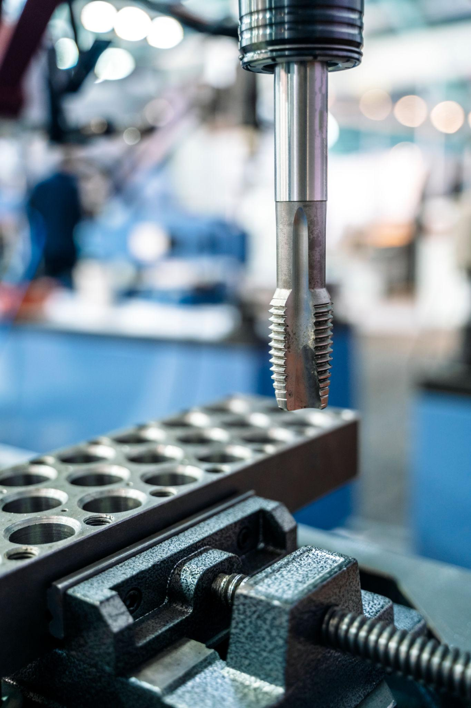
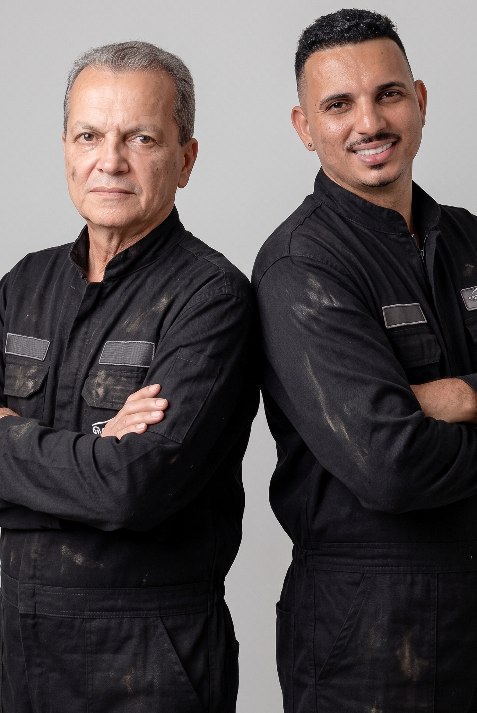

Freios a ar
Atuação especializada em componentes e sistemas de freio.
Há mais de 35 anos recuperando, fabricando e usinando peças para freios, caminhões, carretas e veículos da linha pesada em Sabará e região.
7 Freios • MM Freios • Truck Center Molaço

Anos de experiência
Clientes em destaque
Contatos diretos
Compromisso

A Tornearia Barbosa atua há mais de três décadas oferecendo serviços de tornearia mecânica, recuperação, fabricação e usinagem de peças com excelência técnica.
Nossa especialidade está ligada ao segmento de freios e linha pesada, atendendo oficinas, centros especializados e empresas do setor.
Trabalhamos com compromisso, precisão e responsabilidade para entregar soluções duráveis e de alta qualidade.
Atuação especializada em componentes e sistemas de freio.
Experiência em caminhões, carretas e veículos pesados.
Produção de peças conforme amostra, desenho ou projeto.
Recuperação técnica de componentes com precisão e economia.
Controle dimensional e acabamento técnico.
Atendimento para oficinas e centros especializados.
Usinagem e fabricação de componentes mecânicos.
Restauração e reaproveitamento técnico de componentes.
Produção conforme a necessidade do cliente.
Modificações e ajustes específicos.
Correções, ajustes e melhorias técnicas.
Buscamos e devolvemos sua peça pronta, mediante disponibilidade.
.jpeg)
.jpeg)
.jpeg)
.jpeg)
.jpeg)
.jpeg)
Entendimento claro da necessidade antes do início do serviço.
Atenção às medidas, ao acabamento e à aplicação de cada peça.
Prazos alinhados de acordo com a complexidade e a disponibilidade.
Para facilitar o atendimento, a Tornearia Barbosa oferece serviço de coleta e entrega de peças, conforme disponibilidade e região atendida.
Buscamos o componente, realizamos o serviço necessário e devolvemos pronto para utilização, reduzindo o tempo de parada da sua operação.
Conte com a experiência da Tornearia Barbosa para recuperar, fabricar e usinar peças com qualidade, precisão e compromisso.
Rua Adair Siqueira de Queiroz, 35
Borba Gato
Sabará — MG
barbosatornearia@gmail.com
Segunda a sexta
08h às 17h